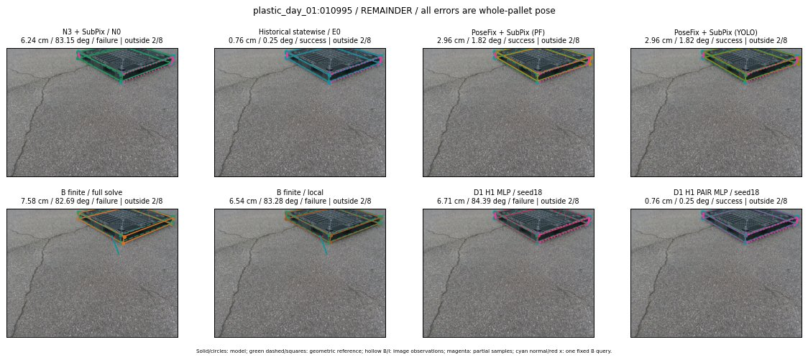

Whole-pallet pose errors; reference is a fixed geometric annotation, not certified physical GT.

Scores are uncalibrated logits. N0 retention is a numerical pose alias; it differs from H0 none or B fallback. B/I and profiles in baseline/B panels are original observations; L panels use new D1 observations. Only one deterministic supported B query is shown in a thumbnail; full support counts are below. Grey privacy rectangles edit the display copy only and are unrelated to O states; all observations were measured on original pixels. Thumbnails use JPEG quality85; detailed scientific panels are PNG.
| Method | Whole pose / cm, deg | Actual source | Selected ID | Score | Archived candidates | Eligible | N0 retained | H0 none | Fallback | Finite profiles |
|---|---|---|---|---|---|---|---|---|---|---|
| Raw YOLO + F | 9.28 cm / 83.77 deg / failure | OTHER | None | N/A | N/A | N/A | False | N/A | None | N/A |
| N3 + SubPix / N0 | 6.24 cm / 83.15 deg / failure | N0 | None | N/A | N/A | N/A | True | N/A | None | N/A |
| Historical statewise / E0 | 0.76 cm / 0.25 deg / success | E0_REGENERATED | None | N/A | N/A | N/A | False | N/A | False | N/A |
| PoseFix raw | 9.81 cm / 83.74 deg / failure | OTHER | None | N/A | N/A | N/A | False | N/A | None | N/A |
| PoseFix + SubPix (PF) | 2.96 cm / 1.82 deg / success | OTHER | None | N/A | N/A | N/A | False | N/A | False | historical support records 9; finite audit N/A |
| PoseFix + SubPix (YOLO) | 2.96 cm / 1.82 deg / success | OTHER | None | N/A | N/A | N/A | False | N/A | False | historical support records 9; finite audit N/A |
| Historical L, seed18 | 6.24 cm / 83.15 deg / failure | N0 | N0 | N/A | 54 | 54 | True | True | True | N/A |
| Historical B fixed bank | 6.87 cm / 84.09 deg / failure | OTHER | G10/ORIGINAL_WD/sample/0 | N/A | N/A | N/A | False | N/A | False | N/A |
| Historical B full | 7.58 cm / 82.69 deg / failure | OTHER | NEW/B/ORIGINAL_WD/h0/G13/ORIGINAL_WD/sample/0/PROPOSED_NATIVE_YAW_0 | N/A | N/A | N/A | False | N/A | False | N/A |
| Historical edge full | 3.21 cm / 6.22 deg / failure | OTHER | NEW/edge/SWAPPED_WD/h3/G10/SWAPPED_WD/sample/2/PROPOSED_NATIVE_YAW_3 | N/A | N/A | N/A | False | N/A | False | N/A |
| Historical AB full | 7.58 cm / 82.69 deg / failure | OTHER | NEW/AB/ORIGINAL_WD/h0/G13/ORIGINAL_WD/sample/0/PROPOSED_NATIVE_YAW_0 | N/A | N/A | N/A | False | N/A | False | N/A |
| B finite / fixed bank | 6.87 cm / 84.09 deg / failure | OTHER | G10/ORIGINAL_WD/sample/0 | N/A | N/A | N/A | False | N/A | False | 4/4 |
| B finite / full solve | 7.58 cm / 82.69 deg / failure | OTHER | NEW_FINITE/B/ORIGINAL_WD/h0/G13/ORIGINAL_WD/sample/0/PROPOSED_NATIVE_YAW_0 | N/A | N/A | N/A | False | N/A | False | 4/4 |
| B finite / local | 6.54 cm / 83.28 deg / failure | OTHER | NEW_FINITE/B/ORIGINAL_WD/h0/N0_LOCAL_SAME_PHYSICAL_POSE/ORIGINAL_WD | N/A | N/A | N/A | False | N/A | False | 4/4 |
| Edge finite / full solve | 3.23 cm / 5.21 deg / failure | OTHER | NEW_FINITE/edge/SWAPPED_WD/h0/G13/SWAPPED_WD/sample/0/PROPOSED_NATIVE_YAW_0 | N/A | N/A | N/A | False | N/A | False | 4/4 |
| D0 H0 MLP / seed18 | 6.24 cm / 83.15 deg / failure | N0 | N0 | 3.0749833583831787 | 20 | 20 | True | True | True | N/A |
| D0 H0 MLP / seed19 | 6.24 cm / 83.15 deg / failure | N0 | N0 | 3.6601345539093018 | 20 | 20 | True | True | True | N/A |
| D0 H0 MLP / seed20 | 6.24 cm / 83.15 deg / failure | N0 | N0 | 0.2104976922273636 | 20 | 20 | True | True | True | N/A |
| D0 H1 MLP / seed18 | 6.71 cm / 84.39 deg / failure | OTHER | G13/ORIGINAL_WD/selected | -1.2337582111358643 | 20 | 20 | False | False | False | N/A |
| D0 H1 MLP / seed19 | 6.71 cm / 84.39 deg / failure | OTHER | G13/ORIGINAL_WD/selected | -1.4867212772369385 | 20 | 20 | False | False | False | N/A |
| D0 H1 MLP / seed20 | 6.71 cm / 84.39 deg / failure | OTHER | G13/ORIGINAL_WD/selected | -2.7633628845214844 | 20 | 20 | False | False | False | N/A |
| D1 H0 MLP / seed18 | 6.24 cm / 83.15 deg / failure | N0 | N0 | 7.570986747741699 | 20 | 20 | True | True | True | N/A |
| D1 H0 MLP / seed19 | 6.24 cm / 83.15 deg / failure | N0 | N0 | 7.5916032791137695 | 20 | 20 | True | True | True | N/A |
| D1 H0 MLP / seed20 | 6.24 cm / 83.15 deg / failure | N0 | N0 | 6.913144588470459 | 20 | 20 | True | True | True | N/A |
| D1 H1 MLP / seed18 | 6.71 cm / 84.39 deg / failure | OTHER | G13/ORIGINAL_WD/selected | -0.2585713863372803 | 20 | 20 | False | False | False | N/A |
| D1 H1 MLP / seed19 | 6.71 cm / 84.39 deg / failure | OTHER | G13/ORIGINAL_WD/selected | -0.36356863379478455 | 20 | 20 | False | False | False | N/A |
| D1 H1 MLP / seed20 | 6.71 cm / 84.39 deg / failure | OTHER | G13/ORIGINAL_WD/selected | -0.6783733367919922 | 20 | 20 | False | False | False | N/A |
| D1 H1 ROLE AFFINE / seed18 | 6.24 cm / 83.15 deg / failure | N0 | N0 | -0.6138924360275269 | 20 | 20 | True | False | False | N/A |
| D1 H1 ROLE AFFINE / seed19 | 6.24 cm / 83.15 deg / failure | N0 | N0 | -0.5806524753570557 | 20 | 20 | True | False | False | N/A |
| D1 H1 ROLE AFFINE / seed20 | 6.71 cm / 84.39 deg / failure | OTHER | G13/ORIGINAL_WD/selected | -0.5307270884513855 | 20 | 20 | False | False | False | N/A |
| D1 H1 PAIR MLP / seed18 | 0.76 cm / 0.25 deg / success | E0_REGENERATED | E0_REGENERATED | -1.61837899684906 | 20 | 2 | False | False | False | N/A |
| D1 H1 PAIR MLP / seed19 | 6.24 cm / 83.15 deg / failure | N0 | N0 | -1.4951887130737305 | 20 | 2 | True | False | False | N/A |
| D1 H1 PAIR MLP / seed20 | 6.24 cm / 83.15 deg / failure | N0 | N0 | -1.5969393253326416 | 20 | 2 | True | False | False | N/A |
| D1 H1 PAIR ROLE AFFINE / seed18 | 6.24 cm / 83.15 deg / failure | N0 | N0 | -0.510087251663208 | 20 | 2 | True | False | False | N/A |
| D1 H1 PAIR ROLE AFFINE / seed19 | 6.24 cm / 83.15 deg / failure | N0 | N0 | -0.9062705636024475 | 20 | 2 | True | False | False | N/A |
| D1 H1 PAIR ROLE AFFINE / seed20 | 6.24 cm / 83.15 deg / failure | N0 | N0 | -0.5034021139144897 | 20 | 2 | True | False | False | N/A |
| Regenerated common E0 | 0.76 cm / 0.25 deg / success | E0_REGENERATED | E0_REGENERATED | N/A | N/A | N/A | False | N/A | False | N/A |